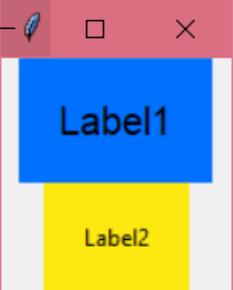
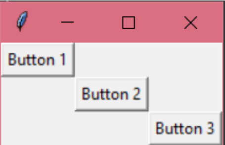
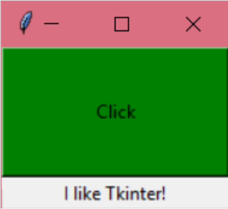

Тема 8.
Tkinter.
Позиціонування елементів
Теорія
Завдання
Завдання №1
Розмісти мітки за зразком. Розміри підібрати самостійно.

Завдання №2
Розмісти кнопки за зразком, використовуючи пакувальник grid. Розміри підібрати самостійно.

Завдання №3
Після натиснення на кнопку зеленого кольору з надписом "Click" повинна нижче з'явитись мітка "I like Tkinter!". Розміри підібрати самостійно.
